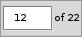

Benutzeroberfläche
Benutzeroberfläche
BePDF besitzt eine elegante, gleichwohl einfache, Benutzerumgebung, die in Form und Funktion der gewohnten Haiku-Philosophie treu bleibt.
Layout

(A) Titel Reiter
BePDFs Fenstertitel besteht aus dem Titel des Dokuments, gefolgt vom Dateinamen in Klammern. Fehlt der Dokument-Titel erscheint nur der Dateiname ohne Klammern.
(B) Menüleiste
Über die Menüleiste gelangt der Benutzer an Funktionen zu Dateiverwaltung, Bearbeitung, Suche, Dokument Navigation, Dokument Ansichten und den Hilfethemen.
(C) Werkzeugleiste
Über die Werkzeugleiste gelangt man schnell und intuitiv an die meist benötigten Werkzeuge. An einige der Funktionen aus dieser Icon Leiste kommt man auch über die Menüleiste.
(D) Seiten/Lesezeichen Listen
Die Seiten und Lesezeichen Listen befinden sich am linken Fensterrand und ermöglichen durch einen einfachen Klick ein genaues Springen zu gewissen Seiten oder Abschnitten eines Dokuments. Diese Seitenleisten lassen sich nach Wunsch auch ausblenden.
(E) Dokumentenfenster
Im Dokumentenfenster wird das PDF dargestellt.
Symbole der Werkzeugleiste
| Öffnet ein neues PDF Dokument | |
| Aktualisiert das PDF Dokument | |
| Zeigt den Druck Dialog | |
| Blendet die Lesezeichen Leiste ein (grau wenn aktiv) | |
| Blendet die Seiten Leiste ein (grau wenn aktiv) | |
| Blendet die Anmerkungen Leiste ein (grau wenn aktiv) | |
| Schaltet auf Vollbildmodus | |
| Springt zum Anfang des Dokuments (grau wenn bereits am Anfang) | |
| Springt 10 Seiten zurück (grau wenn am Anfang) | |
| Springt 1 Seite zurück (grau wenn am Anfang) | |
| Springt 1 Seite vorwärts (grau wenn am Ende) | |
| Springt 10 Seiten vorwärts (grau wenn am Ende) | |
| Springt zum Ende des Dokuments (grau wenn bereits am Ende) | |
| Springt zurück in der Seiten Historie (grau wenn am Anfang der Historie) | |
| Springt vorwärts in der Seiten Historie (grau wenn am Ende der Historie) | |
|  | Manuelle Eingabe der anzuzeigenden Seitenzahl (dient auch zur Anzeige der aktuellen Seitenzahl) |
| Zoom auf Seitenbreite | |
| Zoom auf ganze Seite | |
| Drehen im Uhrzeigersinn | |
| Drehen gegen Uhrzeigersinn | |
| Vergrößern um 20% | |
| Verkleinern um 20% | |
| Textsuche im aktuellen Dokument | |
| Springe zur nächsten Fundstelle des Suchbegriffs |